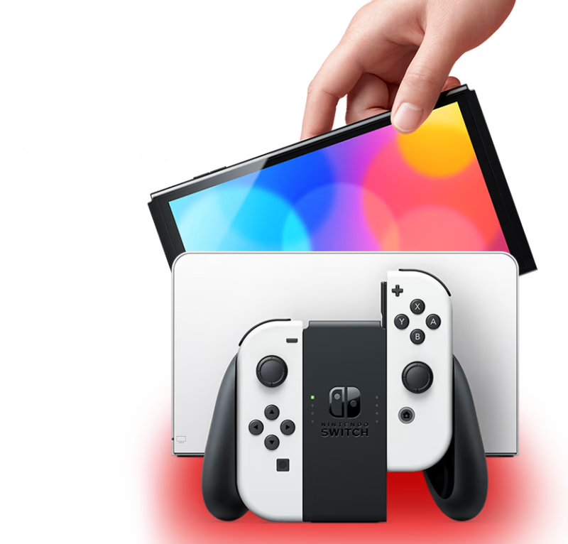

Descubre la consola que te permite disfrutar de tus juegos favoritos donde quieras y como quieras.
Juega en casa en tu televisor o en el camino con una vibrante pantalla OLED de 7 pulgadas (17.78 cm) con la consola Nintendo Switch – Modelo OLED. Además de la pantalla, que ofrece colores brillantes y contrastes definidos, la consola Nintendo Switch – Modelo OLED incluye 64 GB de almacenamiento interno, una base con un puerto LAN para conexión por cable para jugar en el televisor, un soporte ajustable y amplio y audio mejorado.


Te presentamos la última consola que se une a la familia Nintendo Switch
La nueva consola cuenta con una vibrante pantalla OLED de 7 pulgadas (17.78 cm), un soporte ajustable y amplio, una base con puerto LAN para conexión por cable, almacenamiento interno de 64 GB y audio mejorado.

Pantalla OLED de 7 pulgadas (17.78 cm)

Deleita tus ojos con colores brillantes y contrastes definidos cuando juegues en el camino. Mira la diferencia que ofrece una pantalla vibrante cuando compites a toda velocidad o cuando combates a tus enemigos.
Un soporte ajustable y amplio
Utiliza el resistente soporte para disfrutar cómodamente del modo semiportátil.
Encuentra tu mejor ángulo

Ajusta el soporte y encuentra el mejor ángulo de vista para disfrutar de una rápida partida multijugador.
Puerto LAN integrado para conexión por cable
Al utilizar el modo TV conéctate a internet usando el puerto LAN que se encuentra en la base.
Almacenamiento interno de 64 GB
Guarda los juegos en tu consola con 64 GB de almacenamiento interno. Una porción de la memoria interna se reserva para los requerimientos del sistema.
Audio mejorado
Disfruta de un audio superior en los modos portátil y semiportátil con los altavoces de la consola
Tres modos de jugar
¡Las consolas Nintendo Switch y Nintendo Switch – Modelo OLED han sido diseñadas para cualquier estilo de vida, transformándose rápidamente de una consola casera a una consola portátil!
Modo TV
Coloca la consola Nintendo Switch en la base y disfruta de juegos en alta definición en tu televisor.

Modo semiportátil
Utiliza el soporte de la consola para compartir la pantalla y la diversión en un juego multijugador***.

Modo portátil
Retira la consola para jugar con los controles Joy‑Con™ acoplados y disfrutar de la pantalla OLED de 7 pulgadas (17.78 cm).

Los controles Joy‑Con™
Los controles Joy‑Con te ofrecen total flexibilidad a la hora de jugar.
Elige tu estilo de control
Un control o dos, control en vertical o en horizontal, acoplados a la consola o separados. Dependiendo del juego podrás jugar de múltiples maneras.
Comparte con un amigo

Comparte un control Joy-Con con un amigo para disfrutar de diversión multijugador de manera instantánea. ¡O pídeles a tus amigos que traigan sus propios controles para armar una fiesta*!
Intenta algo nuevo
La vibración HD te coloca en el juego con efectos que podrás sentir, mientras que la cámara infrarroja de movimiento te brinda nuevas experiencias.
Juegos
La familia Nintendo Switch es hogar de juegos exclusivos y franquicias como Super Smash Bros.™, The Legend of Zelda™, Mario Kart™ y muchas más.


¡Sorteo!
Inscribite al sorteo y ganá una Nintendo Switch Modelo OLED ROJA (Edición Mario) con el Super Mario Bros, quedan pocos días!